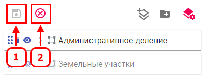

Сохранение и отмена изменений в режиме настройки слоев
Режим Настройки слоев в проекте позволяет зафиксировать или отменить внесенные изменения в отображении и параметрах слоев.
Сохранение изменений
- Нажмите кнопку Сохранить (1).
- Режим Настройки слоев в проекте будет отключен, изменения сохранятся по умолчанию для всех пользователей.
Отмена изменений
- Нажмите кнопку Отменить (2).
- Режим Настройки слоев в проекте будет отключен, внесенные изменения отменятся.
